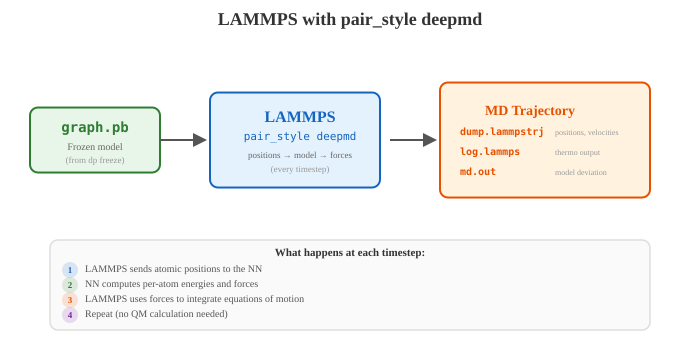
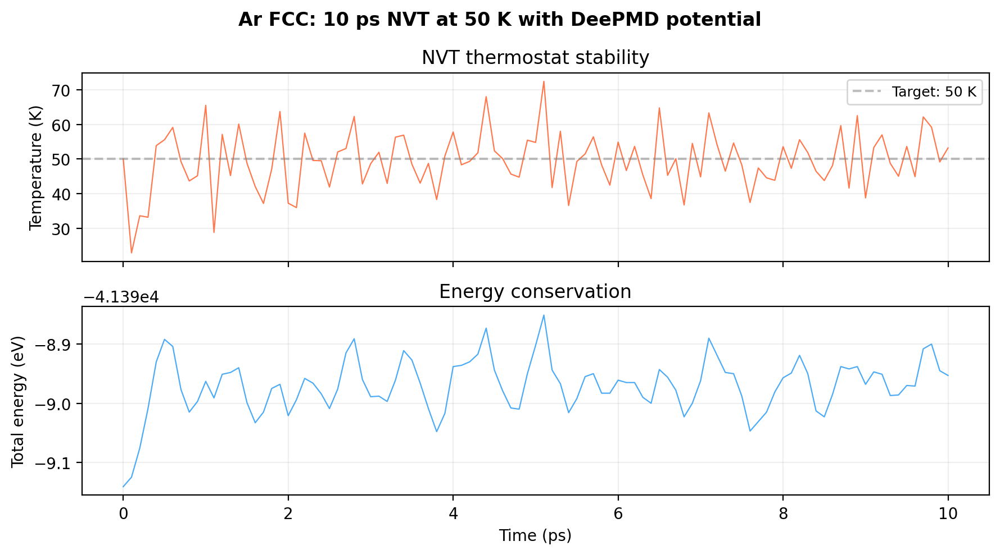
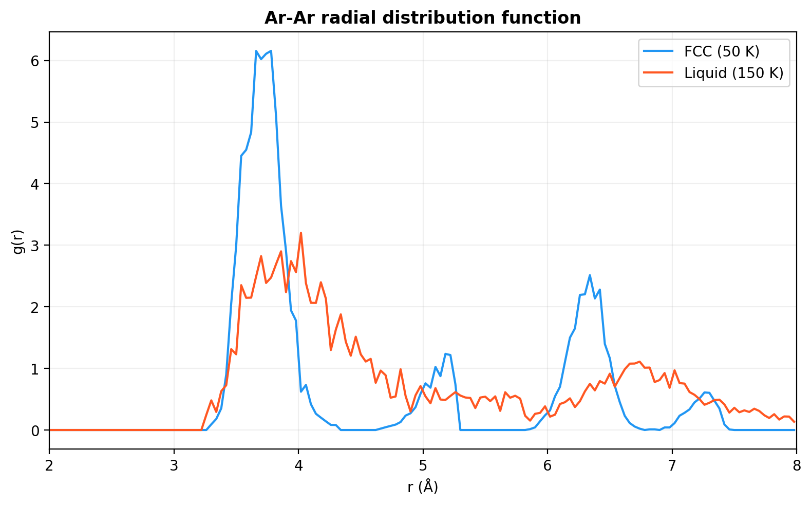
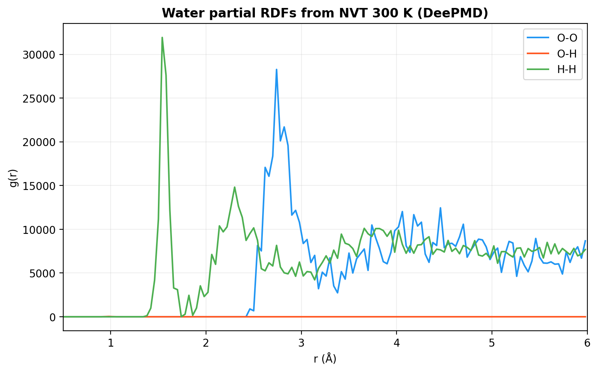

Ch 5: LAMMPS with Deep Potential#
Four chapters. DFT data, dpdata conversion, training, freezing. All of that was preamble. Setup. Paying dues.
This is the payoff.
You have a graph.pb file sitting on disk. A frozen neural network that takes atomic positions in, hands forces back. Now you give it to LAMMPS. And LAMMPS does what LAMMPS does best: integrate Newton’s equations, step by step, thousands of atoms, millions of timesteps. Except this time, the forces aren’t coming from some Lennard-Jones potential you stitched together with mixing rules and prayers. They’re coming from your model. A model that learned directly from DFT.
Near-DFT accuracy. Ab initio MD speed multiplied by three thousand.
Are you seeing this?
LAMMPS doesn’t know the forces came from a neural network. It doesn’t care. It asks “what are the forces on these atoms?” and your model answers. Same interface as any other pair_style. That simplicity is deliberate, and it’s what makes the whole ecosystem work.
pair_style deepmd: Two Lines#
Here’s your entire force field specification:
pair_style deepmd graph.pb
pair_coeff * *
That’s it. That’s the whole thing. No Lennard-Jones parameters. No mixing rules. No Coulomb charges. No KSPACE solver. No bond types, no angle types, no dihedral types. The frozen model file contains the descriptor, the fitting network, the type mapping. Everything.
pair_coeff * * tells LAMMPS that all atom type pairs interact through this potential. DeePMD handles multi-element interactions internally. There are no per-pair coefficients to specify because the neural network already encodes all of them.
I know what you’re thinking. “There has to be more configuration than that.” There isn’t. I had the same reaction. I spent twenty minutes looking for a parameter file that didn’t exist. Coming from classical force fields where you’d burn half a day setting up pair coefficients, bond types, angle parameters, dihedral tables, charge equilibration, this feels wrong. Like you forgot something. You didn’t. The complexity is inside the .pb file. LAMMPS just talks to it.
Clean.
{kind=link}

Fig. 18 How LAMMPS uses the frozen DeePMD model. At each timestep, LAMMPS sends atomic positions to the neural network, which returns forces. No quantum mechanical calculation is needed during the simulation. The md.out file records model deviation when multiple models are loaded.#
Key Insight
LAMMPS atom type numbers must match your type_map ordering. If type_map = ["O", "H"], then LAMMPS type 1 = Oxygen, type 2 = Hydrogen. Get this backwards and the model applies oxygen’s energy function to hydrogen atoms. No error. No warning. Just wrong forces on every atom in the simulation. Same silent corruption as the type.raw issue from Ch 3.
Yes, I’m repeating myself from Ch 3. No, I will not apologize. I got this wrong twice before it stuck.
A Minimal LAMMPS Input#
Here’s the actual LAMMPS input we used for our Ar FCC solid simulation. Every line earns its place.
units metal
boundary p p p
atom_style atomic
# Read FCC Ar structure
read_data ar_fcc.data
mass 1 39.948 # Ar
# DeePMD potential
pair_style deepmd ../01_train/frozen_model.pb
pair_coeff * *
# Neighbor settings
neighbor 2.0 bin
neigh_modify every 1 delay 0 check yes
# NVT at 50 K (solid)
velocity all create 50.0 12345 dist gaussian
fix 1 all nvt temp 50.0 50.0 0.1
# Output
thermo_style custom step temp pe ke etotal press vol density
thermo 100
dump 1 all custom 100 dump.lammpstrj id type x y z fx fy fz
timestep 0.001 # 1 fs
run 10000 # 10 ps
Let’s trace through this.
Config Walkthrough
units metal: This is not a preference.pair_style deepmdrequires metal units. Usereal,si,lj, anything else, and the forces silently come out wrong. No error message. Just garbage dynamics that look almost plausible until you check carefully. Not optional. Not a suggestion. Here’s the full unit system:Property
Metal unit
Example
Energy
eV
pe,ke,etotalin thermo outputLength
Angstrom
Coordinates,
rcutTime
ps
timestep 0.001= 1 fsForce
eV/Angstrom
Forces in dump files
Pressure
Bar
pressin thermo outputTemperature
K
tempin thermo outputVelocity
Angstrom/ps
velocity all create 300.0 ...Mass
g/mol
mass 1 39.948for Aratom_style atomic: Simple point particles. DeePMD doesn’t use bonds, angles, or charges. If you’re coming from classical force fields where everything wasatom_style fullwith massive topology sections, this will feel liberating. Your whole topology: gone. The neural network handles all of it internally through the descriptor.timestep 0.001: That’s 1 fs in metal units (time is in ps). Fine for Ar (heavy atoms, no fast vibrations). For water with hydrogen, we use 0.5 fs (0.0005 ps). Those light atoms vibrate fast. Start conservative. You can push it once the NVE test confirms your energy surface is smooth.fix nvt temp 50.0 50.0 0.1: Nose-Hoover thermostat at 50 K, damping time 0.1 ps (100 fs). The damping time controls how aggressively the thermostat yanks the temperature back to the target. 50-100 fs is the standard range. Too short and you’re strangling the dynamics. Too long and equilibration takes forever.dump ... fx fy fz: Dumping forces alongside positions. You’ll want these later for comparing against DFT reference data or for spotting frames where the model might be struggling. Small storage cost, large diagnostic value.
Read that config one more time. Notice what’s missing: no force field parameter file, no topology, no charge equilibration, no special bonds section, no improper dihedrals. Less than 20 lines and you have a production-ready NVT simulation.
And that’s the whole trick.
For water, the input looks almost identical. The only differences: two masses (mass 1 15.999 # O and mass 2 1.008 # H), a smaller timestep (0.5 fs because hydrogen vibrates fast), and NVT at 300 K instead of 50 K.
For the official methane tutorial, the LAMMPS input follows the same pattern: mass 1 1 (H), mass 2 12 (C), matching type_map: ["H", "C"]. NVT at 50 K, 1 fs timestep. The pair_style deepmd and pair_coeff * * lines are identical regardless of system. That’s the beauty of it.
Preparing the Structure File#
LAMMPS needs a .lmp data file. You can create one from a POSCAR or XYZ file using ASE:
# Using ASE (Python)
from ase.io import read, write
atoms = read('POSCAR')
write('structure.lmp', atoms, format='lammps-data',
atom_style='atomic')
Or directly from dpdata:
import dpdata
d = dpdata.System('POSCAR', fmt='vasp/poscar')
d.to('lammps/lmp', 'structure.lmp')
Either way works. Either way, you need to check the output.
Open the .data file. Look at the atom types. For Ar, there’s only type 1. Easy. For water, type 1 must be O and type 2 must be H (matching type_map: ["O", "H"]). I know I keep hammering this. I’ll stop when it stops being the number one source of silently wrong simulations. Every month on the DeePMD GitHub, someone posts “my model gives terrible results” and the answer is always the same: check your type ordering. Always.
Running the Simulation#
Grab your terminal.
$ cd ~/deepmd_project/ar/03_lammps/
$ apptainer exec --nv ~/deepmd-dpgen.sif lmp -in input.lammps
# Or with MPI (usually overkill for DeePMD; GPU does the work)
$ apptainer exec --nv ~/deepmd-dpgen.sif mpirun -np 1 lmp -in input.lammps
For systems under 1,000 atoms, a single GPU is more than enough. DeePMD inference handles 10,000 atoms on one GPU without breaking a sweat. You don’t need multi-GPU unless your system is massive (50,000+ atoms), and at that point the parallelization strategy itself becomes the research problem.
HPC Reality
Here’s the number you actually want. Our Ar model (32 atoms): 10,000 steps in ~15 seconds on a GPU. Our water model (192 atoms): 20,000 steps in ~8 minutes.
Compare that to QE AIMD: the same 10 ps Ar trajectory took ~2 hours of DFT wall time.
2 hours vs 15 seconds. A speedup of roughly 500x. For larger systems (1000+ atoms), the speedup is even more dramatic because DFT scales as O(N³) while DeePMD scales as O(N).
This is the entire reason you trained the model. This is why you suffered through four chapters of data preparation and neural network training.
Energy Conservation Check (NVE)#
Here’s where it gets interesting. And by interesting, I mean this is the part most people skip and then regret.
You ran NVT. The thermostat held temperature at 300 K. The simulation looked stable. Everything seemed fine. But here’s the thing about thermostats: they actively paper over problems. If the potential energy surface has bumps, discontinuities, or poorly fitted regions, the thermostat compensates. It absorbs the spurious energy, dumps heat, keeps the temperature steady. The simulation looks fine. The model might not be.
Before you trust your model for production MD, run an NVE simulation. No thermostat. No barostat. Just Newton’s equations, raw and unforgiving. If the potential energy surface is smooth and well-behaved, total energy stays constant. If the model has discontinuities, bad training, or cutoff artifacts, the total energy drifts. NVE catches all of that.
# NVE energy conservation test for Ar
units metal
boundary p p p
atom_style atomic
read_data ar_fcc.data
pair_style deepmd frozen_model.pb
pair_coeff * *
mass 1 39.948 # Ar
timestep 0.001 # 1 fs for Ar (heavy atoms)
# Start from an equilibrated configuration
velocity all create 50.0 12345
fix 1 all nve
thermo 10
thermo_style custom step temp pe ke etotal
run 50000 # 50 ps
Now plot etotal vs step. What you want: a flat line with tiny fluctuations. Boring is beautiful here. What you don’t want: a systematic upward drift (the model is pumping energy into the system), a downward drift (energy is leaking out), or sudden jumps (hard discontinuities in the PES). Any of those means the model isn’t ready for production.
I learned this the expensive way. I ran a 500 ps production simulation, analyzed the whole trajectory, wrote up results, and then someone asked “did you check energy conservation?” I hadn’t. Went back. 15 meV/atom drift over 10 ps. The thermostat had been hiding it the entire time. Threw out the trajectory. Retrained. Started over.
Don’t be me.
{kind=link}

Fig. 19 Our Ar FCC NVT at 50 K: temperature fluctuates around the target (top), total energy is rock-stable (bottom). 10 ps of simulation, 32 atoms. This is what a well-trained model looks like in production. Boring is beautiful.#
Key Insight
Energy drift rate is your model’s report card.
Drift rate |
Verdict |
|---|---|
< 1 meV/atom over 10 ps |
Excellent. Production-ready |
1-5 meV/atom over 10 ps |
Acceptable for many applications. Monitor |
5-10 meV/atom over 10 ps |
Concerning. Consider retraining with more data |
> 10 meV/atom/ps |
The PES isn’t smooth enough. Usually means |
Fix the model. Don’t slap a thermostat on it and hope. A thermostat hides the symptom. NVE reveals the disease.
RDF Comparison#
The radial distribution function is a fast structural sanity check. Quick to compute, easy to interpret, catches real problems.
The logic is straightforward. Run your DeePMD MD for a few hundred picoseconds. Compute the RDF. Now compare it against a short DFT-MD reference (even 5-10 ps of AIMD is enough for a reference RDF if you average well). If the peaks line up, the model is reproducing the correct local structure. If the peaks are shifted or the heights are wrong, something is off. The model is either missing interactions or distorting the energy landscape.
# Compute RDF from LAMMPS dump
from ase.io import read
import numpy as np
# Read trajectory
frames = read('dump.lammpstrj', index='100:', format='lammps-dump-text')
# Compute RDF using ASE or MDAnalysis
# (simplified; use your preferred RDF tool)
Or compute it directly inside LAMMPS:
compute rdf all rdf 200 1 1 1 2 2 2
fix rdf_out all ave/time 100 10 1000 c_rdf[*] file rdf.dat mode vector
What counts as “good agreement”? Peak positions within 0.01 Angstroms. Peak heights within 5-10%. If you’re further off than that, the model needs more training data in the configuration space you’re sampling. The RDF is telling you exactly where the model’s knowledge has gaps. Listen to it.
{kind=link}

Fig. 20 Ar-Ar RDF from our DeePMD simulations. FCC solid (blue) shows sharp crystalline peaks at the expected nearest-neighbor distances. Liquid (orange) shows the classic broad first peak and decaying oscillations. The model correctly distinguishes two fundamentally different phases.#
{kind=link}

Fig. 21 Water partial RDFs from NVT 300 K with our DeePMD model. O-O (blue) shows the characteristic first peak around 2.7 Angstroms. O-H (orange) captures the intramolecular peak at ~1.0 Angstroms and the intermolecular hydrogen-bonding peak. H-H (green) shows the expected structure. These are computed from the LAMMPS trajectory, not from DFT, and they reproduce the expected liquid water structure.#
Multiple Models (for Model Deviation)#
Pay attention to this next part. This is where Ch 5 connects to Ch 6, and it’s where LAMMPS stops being just an MD engine and becomes part of the active learning loop.
In the dpgen workflow, LAMMPS doesn’t run with one model. It runs with all four simultaneously. Same atomic positions, four different neural networks (trained on the same data with different random seeds). Every timestep, every model predicts the forces, and dpgen records how much they disagree. Here’s the syntax:
pair_style deepmd graph.000.pb graph.001.pb graph.002.pb graph.003.pb out_file model_devi.out out_freq 100
pair_coeff * *
Four models. One pair_style line. out_file model_devi.out tells LAMMPS where to write the deviation data. out_freq 100 means record it every 100 steps. During a dpgen run, you never write this yourself; dpgen generates it automatically. But understanding the syntax matters because you will, at some point, want to test model deviation on a custom trajectory outside of dpgen. Maybe you want to check how your converged model handles a new temperature range. Maybe you want to validate before committing to a full dpgen extension run. Trust me on this one.
That file, model_devi.out, is the heartbeat of the active learning loop. Column 5 (max deviation of forces across atoms) is the number dpgen uses to sort every frame into one of three buckets: accurate, candidate, or failed. But that’s Ch 6’s story.
Common Issues#
Here’s what nobody tells you about debugging LAMMPS with DeePMD. The error messages, when they exist at all, are rarely helpful. Most of the real problems produce no error. The simulation just runs and gives you wrong answers. So here’s the field guide.
LAMMPS can’t find graph.pb: The path in pair_style deepmd is relative to where you run LAMMPS. Not where the input script lives. Not your home directory. The directory you’re sitting in when you type lmp -in input.lammps. This one will bite you the first time you submit a PBS job that runs from a different working directory than you expected. Use an absolute path if there’s any doubt.
Atom types don’t match: If your LAMMPS data file assigns type 1 to hydrogen and type 2 to oxygen, but your model was trained with type_map = ["O", "H"] (O=1, H=2), every single force is wrong. Every atom. Every timestep. Check with head -20 structure.data and verify the type assignments against your type_map. I have personally wasted two separate afternoons on this. Both times I was convinced the model was bad. Both times the model was fine. The model was fine and I was the problem. Ask me how I know.
Simulation blows up immediately: Either the initial structure has atoms too close together, or the model has genuinely never seen the starting configuration. Try energy minimization first:
minimize 1.0e-6 1.0e-8 1000 10000
If it still explodes after minimization, the model doesn’t know this region of configuration space. It’s not a LAMMPS problem. It’s a training data problem. You need more DFT data in this regime.
Very slow without GPU: Make sure LAMMPS was compiled with GPU support for DeePMD and you’re passing --nv to Apptainer. Without the GPU, inference falls back to CPU and you lose a factor of 50-100x in speed. At that point, you’ve spent four chapters building a neural network potential only to run it at barely-faster-than-DFT speeds. I cannot stress this enough: check that the GPU is actually being used. Look for the TensorFlow GPU initialization messages in the LAMMPS log output.
What’s Next#
You just completed the full single-model workflow. DFT data in, dpdata conversion, dp train, dp freeze, LAMMPS MD out. You can build a potential and run simulations with it. That’s real. That’s not theoretical anymore. We did it with Ar (solid + liquid) and water (liquid at 300 K).
But here’s the thing. This model is exactly as good as the training data you handed it. No better. No worse. It’s a student who studied only the material you gave them. Our Ar model knows FCC at 50 K and liquid at 150 K. Push it to 500 K, to an interface, to anything outside that narrow training window, and it guesses. Sometimes the guess is okay. Sometimes the simulation explodes in 200 steps.
You need a way to systematically find where it fails. To automatically generate the training data it needs. To converge a potential that covers an entire region of phase space without you manually curating every single frame. You need the model to tell you where it’s uncertain, and you need a system that acts on that uncertainty.
That’s dpgen. That’s Ch 6.